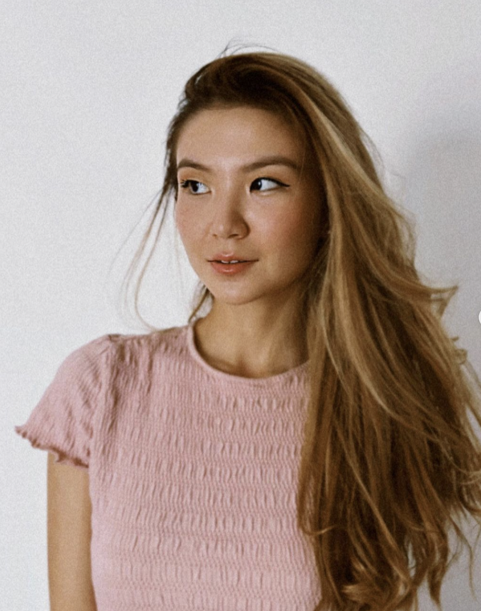

Let's get to know each other!
That's me :)
About me: I am an undergraduate student at Parsons School of Design in NYC, majoring in Design and Technology and minoring in Fashion Business and Immersive Storytelling.
My interests: I love reading classic books, dancing contemporary, going to pilates, and hanging around Manhattan.
Career goals: I am interested in integrating future technologies into art and daily life.
Reflections: My journey with technology began in high school when I studied IT in Global Society. Initially intimidated by coding, I have now embraced it in my 20s and enjoy building my skills.
Favorite coffee shops in NYC: Conwell Coffee Hall, Stumptown Coffee Roasters, Ademi Coffee and Tea, PlantShed at Kith Women, and Le Pain Quotidien.